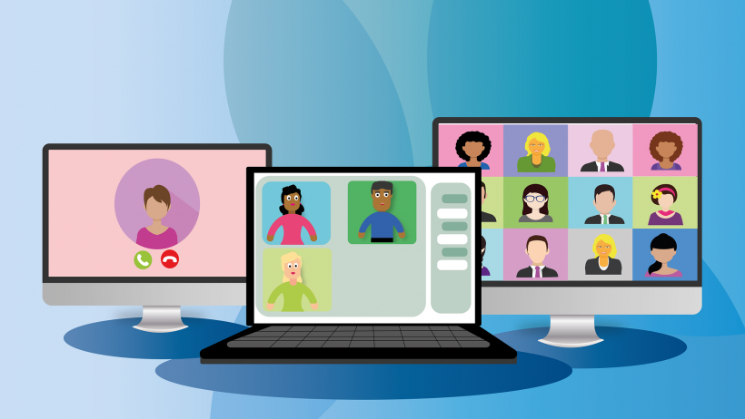
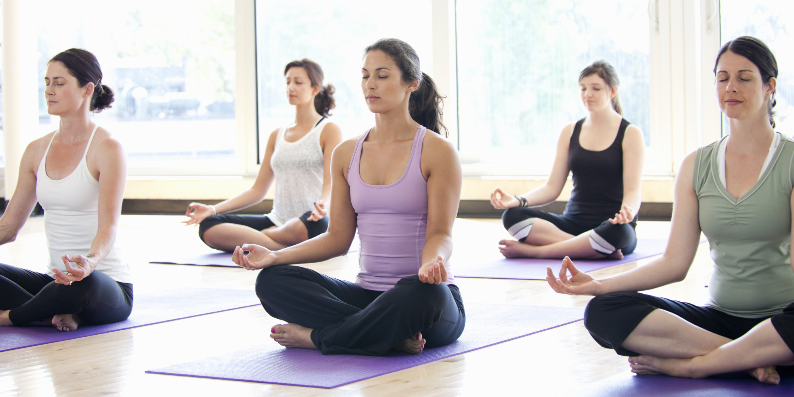
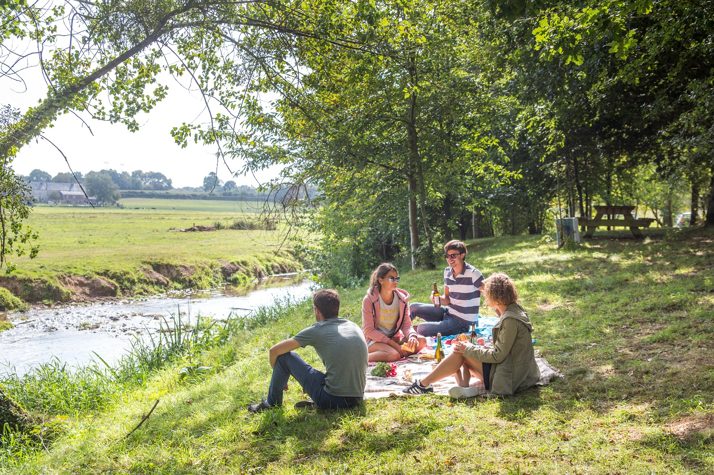
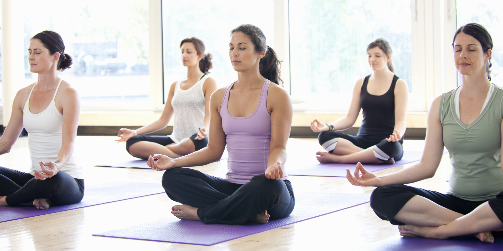
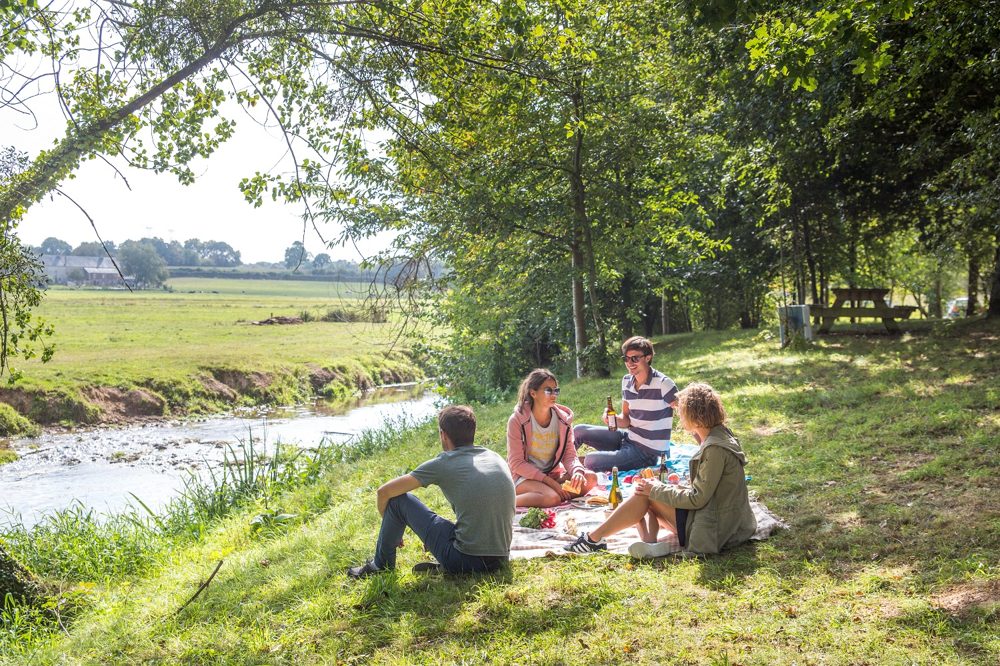

Rencontres
Dans cette rubrique, vous pouvez retrouver toutes les informations concernant nos visios-conférences avec
vous !
Celle-ci est représenté par plusieurs catégories qui regroupent les anciennes visios par thèmes (rediffusion)
ainsi que les futures visios à venir.
Il y a notamment un espace où nous mettrons à votre disposition les liens pour nous rejoindre durant
les visios que l'on effectue sur Google Meet.
Nos visios :
| Futures visios |
|---|
| - Féminisme dans le milieu de la musique. |
| - Les hommes féministes ? |
| ... |
| Anciennes visios |
|---|
| Thème 1 : Égalité Hommes/Femmes |
| Thème 2 : Violences |
| ... |
Ici vous pouvez retrouver les fameux tableaux qui classent les différentes visios que l'on a pu faire ou
que l'on fera ensemble.
Ces visios-conférences ont pour but de s'ouvrir et d'en apprendre plus sur les thèmes que l'on aborde.
Ce sont la plupart du temps des sujets récurrents de la société qui mènent aux débats et qui nous permettrait de
discuter pour avoir différents avis sur ceux-ci.
Il y a notamment les thèmes des futures visios qui nous sont soit proposer par vous sur les réseaux sociaux,
soit proposer par notre équipe même directement.
Nos activités :
Mise à part les rencontres virtuelles sur Google Meet, nous vous proposons également de réelles rencontres
avec des activités très variées !
Celles-ci ont pour objectifs premiers d'aider les personnes les plus mals dans
leurs peaux à se réouvrir petit à petit, de faire des nouvelles connaissances et de se libérer l'esprit !
Cela nous fait tout autant plaisir de partager ces moments avec vous !
Les activités proposés sont les suivantes :
- Camping
- Sports/Activités de détente (Yoga..)
- Week-end à passer ensemble
Voici un carousel qui vous présente ces différentes activités !
 


